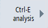
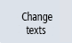

Introduction
You have the option of assigning language-dependent names to auxiliary units.
Procedure
 | 1. | You are in the "SINUMERIK Ctrl-Energy" entry window. |
|  | 2. | Press the "Ctrl-E analysis" softkey. The "Ctrl-E analysis" window opens. The summed consumption values of the components are displayed. You can find the list of auxiliary units under "Sum totals". |
 | 3. | Select directory "Sum totals" and click on the
<Cursor right> key or symbol "Arrow to the right". The selection of the auxiliary units contained under "Sum totals" opens. |
|  | 4. | Press softkey "Change texts". You can now edit the names of the auxiliary units. |
 | 5. | Press softkey "OK". The new names for the auxiliary units are adopted. |
| Note |
To change the names of the auxiliary units into other available languages, select the required language and then repeat steps 3 to 5. If no language-dependent names for auxiliary units were saved in another language, then standard texts are displayed in the respective language. However, if names for auxiliary units were saved in English, then these are displayed in this case. |